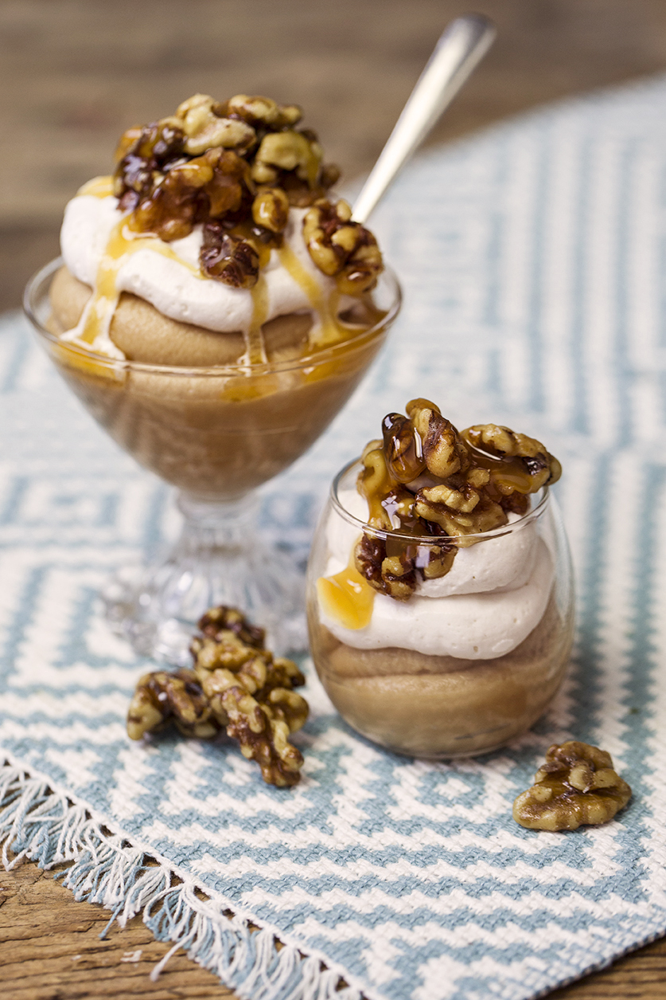

Butterscotch Pudding
Recipe By Zarnak Sidhwa

This delicious pudding is best served cold. Dark brown sugar and cream give it a unique taste. A perfect pudding to hit in a party
Ingredients
- Dark brown sugar ½ cup
- Corn flour 3 tbsp
- Salt ¼ tsp
- Milk 1 ½ cup
- Cream ½ cup
- Unsalted butter 2 tbsp
- Vanilla essence 1 ½ tsp
- Cream and cocoa powder, for garnish
Cooking Direction
- Place brown sugar, corn flour, and salt in a saucepan. Whisk to combine.
- Add about ½ cup milk and whisk until combined.
- Add remaining milk and cream, whisking to combine. Bring to a boil, whisking frequently and cook for one minute.
- Remove pan from heat. Add butter and vanilla, and whisk to combine
- Pour pudding into a bowl. Cover with plastic wrap, keep in fridge and chill 2 hours. Garnish with sweetened whipped cream and cocoa powder. Serve.